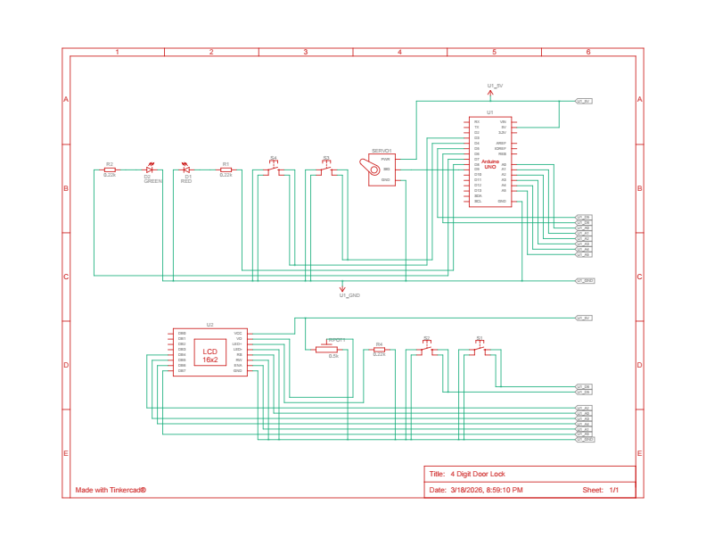

Arduino 4 Digit Doorlock
A security prototype designed to simulate a digital deadbolt with programmable password mode, input masking, and motorized locking mechanism.
Project Overview
The 4-Digit Door Lock is a security prototype designed to simulate a digital deadbolt. It features a programmable password mode, input masking for security, a timeout function to clear idle inputs, and a motorized "latch" (servo).
Hardware Specifications
The system is built around the Arduino Uno microcontroller. The following components are integrated as shown in the provided wiring diagram and schematic:
Component List & Connectivity
| Component | Arduino Pin | Description |
|---|---|---|
| Buttons (4x) | 6, 5, 4, 3 | Used for code entry. Configured with internal INPUT_PULLUP. |
| Red LED | 8 | Indicates "Access Denied," "Error," or "Timeout." |
| Green LED | 7 | Indicates "Access Granted" or "Password Set." |
| Servo Motor | 9 | Simulates the locking mechanism (0° Locked, 180° Unlocked). |
| LCD (16x2) | 14–19 (A0–A5) | Provides user instructions and status updates. |
| Potentiometer | VEE / Vo | Adjusts the contrast of the 16x2 LCD screen. |
System Logic and Software
The software is structured into three primary operational states: Setup, Authentication, and Lock Actuation.
A. Initialization (Setup)
Upon power-up, the system initializes the LCD, attaches the Servo to pin 9, and sets the initial position to 0° (Locked). The code uses pinMode(btnPins[i], INPUT_PULLUP) to simplify wiring by eliminating the need for external pull-up resistors.
B. Password Programming
The system enters "Set Password" mode under two conditions:
- Initial Startup: The startup flag is set to 1.
- Manual Override: Pressing Button 1 and Button 4 simultaneously.
During this mode, both LEDs remain HIGH. The system records the next four button presses into the password[4] array.
C. Security Features
- Input Masking: To prevent "shoulder surfing," the LCD displays an asterisk (*) instead of the actual digit during entry.
- Timeout Function: If a user begins entering a code but stops for more than 5000ms, the loop() function triggers a timeout, clears the current inputCount, and flashes the Red LED.
- Debouncing: A delay(300) is implemented after button presses to prevent "bouncing," where a single physical press is registered as multiple inputs.
Operation Flow
- Idle State: LCD displays "Enter Code:". Servo is at 0°.
- Input State: User presses buttons. For each press, handleButtonPress() updates the attempt[] array.
- Verification: Once inputCount reaches 4, checkPassword() compares the attempt array to the stored password array.
- Match: Green LED turns ON, Servo rotates to 180°, waits 3 seconds, then returns to 0°.
- Mismatch: Red LED flashes three times; access is denied.
Schematic Analysis
- Resistors: Current-limiting resistors (R1, R2, R4) are used for the LEDs and LCD backlight to prevent overcurrent.
- LCD Wiring: The LCD is wired in 4-bit mode using the Analog pins (A0-A5, addressed as digital pins 14-19 in the code) to save digital I/O space for the buttons and servo.
Wiring Diagram and Schematic

Figure 1: Wiring Diagram

Figure 2: Schematic